Σύγκριση Batch και Stream Processing για την έγκαιρη ανίχνευση κερδοφόρων ευκαιριών αρμπιτράζ σε ροή δεδομένων αποδόσεων ποδοσφαιρικών αγώνων από 8 ευρωπαϊκές λίγκες.
Σε μια στοιχηματική αγορά με τρία πιθανά αποτελέσματα (Νίκη Γηπεδούχου, Ισοπαλία, Νίκη Φιλοξενούμενου — γνωστή ως 1Χ2), κάθε στοιχηματική εταιρία προσφέρει τη δική της δεκαδική απόδοση για κάθε outcome. Η αντίστροφη τιμή 1/odds αντιστοιχεί στην εξυπακουόμενη πιθανότητα (implied probability). Σε μια ιδεατή «δίκαιη» αγορά χωρίς περιθώριο κέρδους για τον bookmaker, το άθροισμα των τριών εξυπακουόμενων πιθανοτήτων ισούται με 1. Στην πραγματικότητα είναι μεγαλύτερο, καθώς κάθε στοιχηματική εισάγει overround.
Όταν όμως ληφθούν οι καλύτερες αποδόσεις κάθε outcome από διαφορετικές στοιχηματικές, το άθροισμα μπορεί ενίοτε να βρεθεί μικρότερο της μονάδας:
arbitrage ⟺ 1/best_odds_1 + 1/best_odds_X + 1/best_odds_2 < 1.0
profit_margin = 1 − Σ(1/best_odds_i)Σε αυτή την περίπτωση, ο παίκτης μπορεί να στοιχηματίσει σε όλα τα outcomes με κατάλληλα κατανεμημένα ποσά (αναλογικά με το 1/odds) και να εξασφαλίσει εγγυημένο κέρδος ίσο με το profit_margin, ανεξάρτητα από το τελικό αποτέλεσμα του αγώνα.
Έστω καλύτερες αποδόσεις 2.20 / 3.60 / 4.00 από τρεις διαφορετικές στοιχηματικές. Το άθροισμα 1/2.20 + 1/3.60 + 1/4.00 = 0.455 + 0.278 + 0.250 = 0.983 < 1.0. Υπάρχει arbitrage με περιθώριο 1.7%. Στοιχηματίζοντας ποσά αναλογικά (45.5% του συνόλου στο 1, 27.8% στο Χ, 25.0% στο 2), η επιστροφή είναι ίδια σε κάθε ένα από τα τρία πιθανά αποτελέσματα και υπερβαίνει το αρχικό κεφάλαιο κατά 1.7%.
Οι αποδόσεις στις στοιχηματικές μεταβάλλονται συνεχώς λόγω εισροής στοιχημάτων από το κοινό, εσωτερικών μοντέλων αξιολόγησης κινδύνου, ή νέων πληροφοριών για τον αγώνα (τραυματισμοί, καιρικές συνθήκες, κ.λπ.). Μια arbitrage ευκαιρία δημιουργείται από στιγμιαία ασυμμετρία μεταξύ δύο ή περισσότερων bookmakers και τυπικά διαρκεί μερικά δευτερόλεπτα πριν οι αυτόματοι αλγόριθμοι των στοιχηματικών την εξαλείψουν.
Συνεπώς, οποιοδήποτε σύστημα προσπαθεί να εντοπίσει τέτοιες ευκαιρίες πρέπει να εμφανίζει χαμηλή καθυστέρηση από τη στιγμή που μια απόδοση αλλάζει μέχρι τη στιγμή που εκπέμπεται μια ειδοποίηση arbitrage. Αυτό καθιστά το πρόβλημα ιδανικό για παραδειγματική σύγκριση μεταξύ δύο διαφορετικών προσεγγίσεων κατανεμημένης επεξεργασίας: Batch (περιοδική επεξεργασία συσσωρευμένων δεδομένων) έναντι Stream (συνεχής επεξεργασία κάθε event μόλις φτάνει).
Ως Big Data ορίζεται σύνολο δεδομένων το οποίο, λόγω όγκου ή πολυπλοκότητας, δεν μπορεί να επεξεργαστεί με παραδοσιακό λογισμικό. Χαρακτηρίζεται από τα τέσσερα V: Volume (όγκος), Velocity (ταχύτητα παραγωγής), Variety (ποικιλία μορφών) και Veracity (αξιοπιστία). Στην παρούσα εργασία κυριαρχεί το χαρακτηριστικό Velocity: τα δεδομένα παράγονται σε υψηλό ρυθμό και απαιτούν άμεση επεξεργασία.
Batch processing: τα δεδομένα συγκεντρώνονται σε χρονικά παράθυρα προκαθορισμένης διάρκειας και επεξεργάζονται μαζικά μετά την ολοκλήρωση του παραθύρου. Παρέχει υψηλή απόδοση σε σταθερό φόρτο εργασίας αλλά εισάγει εγγενή καθυστέρηση τουλάχιστον ίση με το παράθυρο.
Stream processing: τα events επεξεργάζονται μεμονωμένα ή σε πολύ μικρά micro-batches μόλις φτάσουν. Εξασφαλίζει χαμηλή καθυστέρηση αντίδρασης αλλά απαιτεί διαχείριση κατάστασης (state) μεταξύ διαδοχικών events.
Το Apache Kafka είναι κατανεμημένο σύστημα μηνυμάτων (distributed message broker) σχεδιασμένο για υψηλό throughput και ανθεκτικότητα. Λειτουργεί ως ενδιάμεσος μεταξύ producers (που στέλνουν μηνύματα) και consumers (που τα διαβάζουν), αποθηκεύοντάς τα σε topics τα οποία υποδιαιρούνται σε partitions για παραλληλισμό. Από την έκδοση 3.x υποστηρίζει τη λειτουργία KRaft, η οποία αντικαθιστά το Zookeeper με ενσωματωμένο μηχανισμό consensus.
Το Apache Spark είναι framework κατανεμημένης επεξεργασίας δεδομένων που, σε σύγκριση με τον προγενέστερο Hadoop MapReduce, παρέχει σημαντικά βελτιωμένη απόδοση (συνήθως 10× έως 100× σε τυπικά benchmarks) και ευκολότερο API. Υποστηρίζει τόσο batch επεξεργασία (Spark SQL / DataFrame API) όσο και streaming (Spark Structured Streaming) μέσα από κοινή προγραμματιστική διεπαφή, γεγονός που επιτρέπει «apples-to-apples» σύγκριση μεταξύ των δύο παραδειγμάτων.
Σε στιγμιότυπο μιας αγοράς 1Χ2 με Ν διαφορετικές στοιχηματικές, η ανίχνευση arbitrage συνοψίζεται σε τρία βήματα:
Η αρχιτεκτονική ακολουθεί κλασικό streaming pattern τριών επιπέδων: παραγωγός δεδομένων → broker → καταναλωτές. Όλα τα στοιχεία τρέχουν τοπικά (η Θεματική 1 δεν απαιτεί cloud provider): το Apache Kafka σε container Docker, οι Spark consumers σε λειτουργία local[*] που αξιοποιεί όλους τους διαθέσιμους πυρήνες του μηχανήματος.
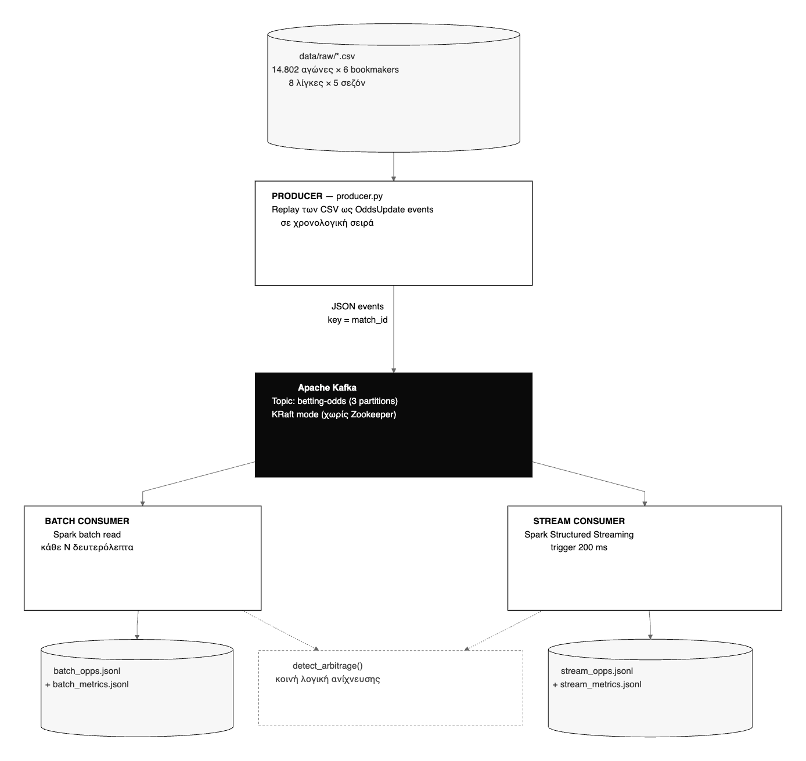
match_id), απ' όπου καταναλώνουν παράλληλα οι δύο consumers — αμφότεροι με την κοινή detect_arbitrage() — γράφοντας ευκαιρίες και metrics σε ξεχωριστά αρχεία εξόδου. (Διάγραμμα: Mermaid, πηγή στο report/architecture.mmd.)| Επιλογή | Αιτιολόγηση |
|---|---|
| Kafka σε KRaft mode | Απαλείφει την εξάρτηση από Zookeeper, μειώνοντας τα κινούμενα μέρη του πειραματικού περιβάλλοντος |
| 3 partitions στο topic | Επιτρέπει παραλληλισμό κατά την κατανάλωση από το Spark |
| Partition key = match_id | Διασφαλίζει σειριακή επεξεργασία των ενημερώσεων ενός αγώνα |
Κοινή detect_arbitrage() και στους δύο consumers | Οι διαφορές στα αποτελέσματα οφείλονται αποκλειστικά στο paradigm επεξεργασίας και όχι σε διαφορετική υλοποίηση |
| In-memory state στον Stream consumer | Απλούστερη υλοποίηση από τους stateful operators του Spark· επαρκής για την κλίμακα της εργασίας |
Τα δεδομένα προέρχονται από το football-data.co.uk, μια δημόσια αρχειακή πηγή που δημοσιεύει αποτελέσματα ποδοσφαιρικών αγώνων και αντίστοιχες αποδόσεις πολλαπλών στοιχηματικών. Η επιλογή αυτή προτιμήθηκε λόγω άμεσης διαθεσιμότητας των CSV χωρίς λογαριασμό ή έλεγχο ταυτότητας.
Επελέγησαν 8 ευρωπαϊκές λίγκες × 5 σεζόν (2020–21 έως 2024–25), συνολικά 40 αρχεία CSV και 14.802 αγώνες, καλύπτοντας: Αγγλικό Premier League, Αγγλικό Championship, Ισπανικό La Liga, Ιταλικό Serie A, Γερμανικό Bundesliga, Γαλλικό Ligue 1, Ολλανδικό Eredivisie και Πορτογαλικό Primeira Liga.
Το dataset παρέχει αποδόσεις τύπου closing/opening ανά αγώνα — όχι intra-match time series. Συνεπώς το arbitrage εντοπίζεται μέσω cross-bookmaker σύγκρισης για ένα δεδομένο γεγονός σε συγκεκριμένο στιγμιότυπο, και όχι μέσω παρακολούθησης της εξέλιξης των αποδόσεων κατά τη διάρκεια του παιχνιδιού.
| Bookmaker | Αγώνες με odds | % κάλυψης |
|---|---|---|
| Bet365 | 14.794 | 99,9% |
| Pinnacle | 14.793 | 99,9% |
| William Hill | 14.125 | 95,4% |
| Bet&Win | 13.656 | 92,3% |
| Betfair | 2.912 | 19,7% |
| 1XBet | 2.842 | 19,2% |
Τέσσερις στοιχηματικές (Bet365, Pinnacle, William Hill, Bet&Win) καλύπτουν πάνω από το 92% των αγώνων και αποτελούν τη βάση του cross-bookmaker scan. Οι Betfair και 1XBet προσθέτουν επιπλέον σήμα όπου είναι διαθέσιμες.
Πριν την υλοποίηση του streaming pipeline, εκτελέστηκε offline σάρωση όλου του dataset για επιβεβαίωση ύπαρξης ευκαιριών arbitrage. Στο σύνολο των 14.798 αγώνων με τουλάχιστον δύο διαθέσιμες στοιχηματικές, εντοπίστηκαν 90 ευκαιρίες, δηλαδή ποσοστό 0,608%. Το αποτέλεσμα ευθυγραμμίζεται με τη βιβλιογραφία, η οποία αναφέρει τυπικά ποσοστά 0,5%–1% για pre-match arbitrage σε ποδόσφαιρο. Το μεγαλύτερο εντοπισμένο περιθώριο ήταν 9,34% στον αγώνα Paris SG–Metz (16/9/2020).
Ο producer (producer/producer.py) διαβάζει ολόκληρο το σύνολο των CSV, ταξινομεί τις εγγραφές χρονολογικά με βάση τα πεδία Date και Time, και για κάθε αγώνα παράγει ένα event ανά στοιχηματική που διαθέτει έγκυρες αποδόσεις 1Χ2. Κάθε event έχει την ακόλουθη δομή JSON:
{
"match_id": "F1-2020-08-21-Bordeaux-Nantes",
"league": "F1",
"home_team": "Bordeaux",
"away_team": "Nantes",
"match_date": "2020-08-21",
"bookmaker": "Bet365",
"odds_home": 2.4,
"odds_draw": 3.0,
"odds_away": 3.25,
"event_time_ms": 1598032800000,
"real_time_ms": 1779490227596
}Το event περιλαμβάνει δύο χρονοσφραγίδες με διακριτό ρόλο: το event_time_ms αντιστοιχεί στη χρονική στιγμή τέλεσης του αγώνα (χρησιμοποιείται για χρονική ομαδοποίηση downstream), ενώ το real_time_ms καταγράφει την wall-clock στιγμή αποστολής του event στο Kafka (χρησιμοποιείται για τον υπολογισμό του end-to-end latency στους consumers).
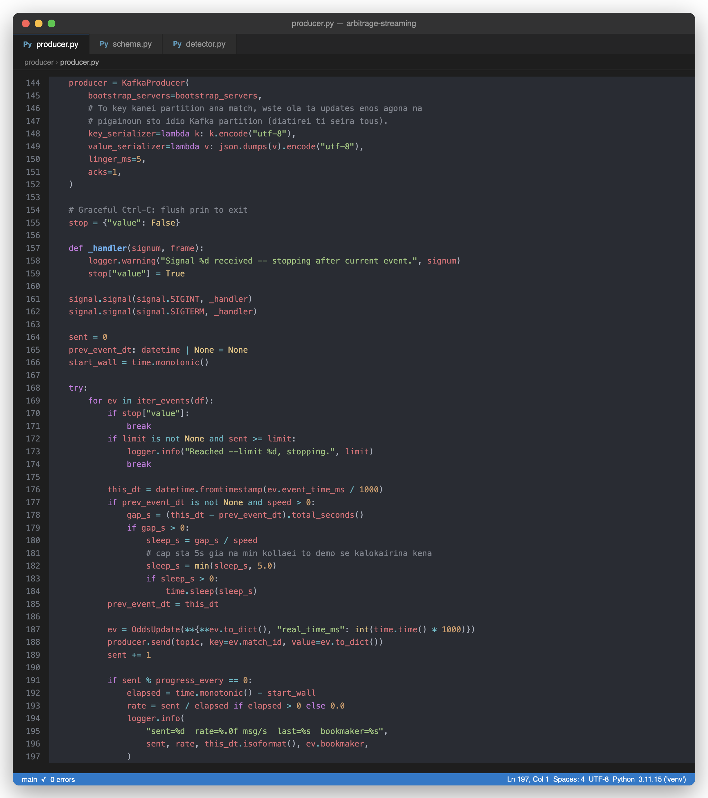
producer/producer.py — ο πυρήνας του producer: ο KafkaProducer δημιουργείται με key_serializer ώστε το match_id να καθορίζει το partition (διατήρηση σειράς ανά αγώνα), το replay ρυθμίζεται από το --speed, και κάθε event σφραγίζεται με real_time_ms ακριβώς πριν το producer.send().Ο Batch consumer (consumers/batch/batch_consumer.py) ακολουθεί λογική polling loop. Σε κάθε επανάληψη του βρόχου:
detect_arbitrage().window_seconds πριν την επόμενη επανάληψη.Η αναμενόμενη μέση καθυστέρηση εντοπισμού είναι περίπου ίση με το ήμισυ του παραθύρου, ενώ η μέγιστη φτάνει το πλήρες παράθυρο.
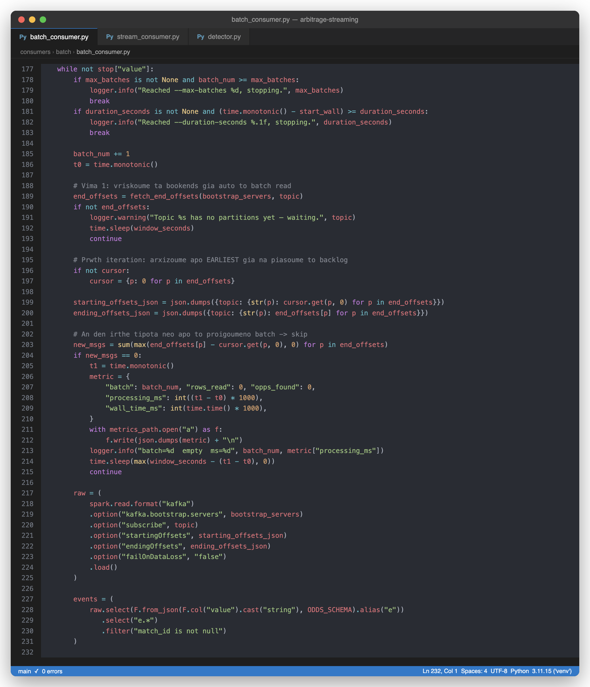
consumers/batch/batch_consumer.py — ο polling βρόχος του Batch consumer: λήψη των τρεχόντων end offsets, έλεγχος για νέα μηνύματα (skip αν το παράθυρο είναι κενό), και το πεπερασμένο spark.read.format("kafka") με ρητά startingOffsets/endingOffsets.Ο Stream consumer (consumers/stream/stream_consumer.py) αξιοποιεί το Spark Structured Streaming με trigger processingTime ορισμένο στα 200 ms. Σε κάθε micro-batch, ένα foreachBatch callback εκτελεί τα ακόλουθα βήματα:
detect_arbitrage() καλείται μόνο για τα touched matches (incremental work), όχι για όλους τους γνωστούς αγώνες.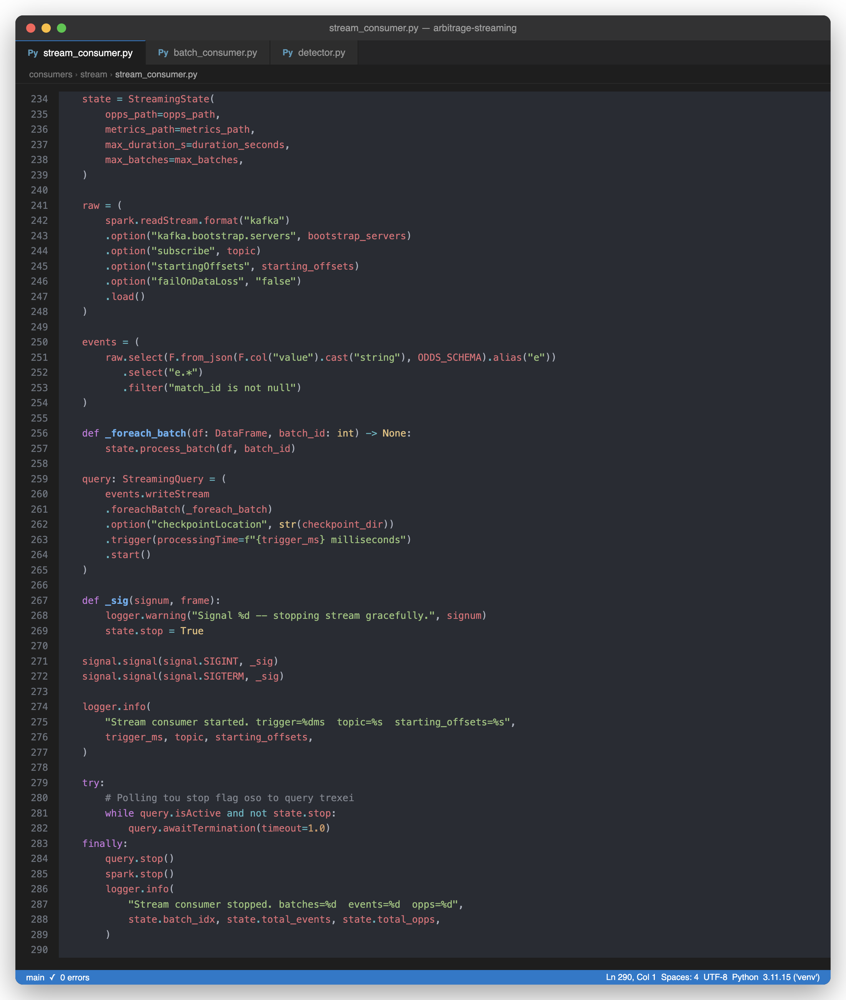
consumers/stream/stream_consumer.py — η καρδιά του Stream consumer: το spark.readStream.format("kafka"), ο δηλωτικός ορισμός του streaming query με foreachBatch callback, checkpointLocation και trigger(processingTime), και ο graceful τερματισμός μέσω signal handler.Η arbitrage/detector.py υλοποιεί τη μαθηματική λογική που περιγράφηκε στην παράγραφο 2.5. Αποτελεί τη μοναδική πηγή αλήθειας για την ανίχνευση και χρησιμοποιείται από αμφότερους τους consumers, εξασφαλίζοντας έτσι ότι τυχόν διαφορές αποτελεσμάτων μεταξύ Batch και Stream οφείλονται αποκλειστικά στην αρχιτεκτονική επιλογή και όχι σε διαφορετική λογική υπολογισμού.
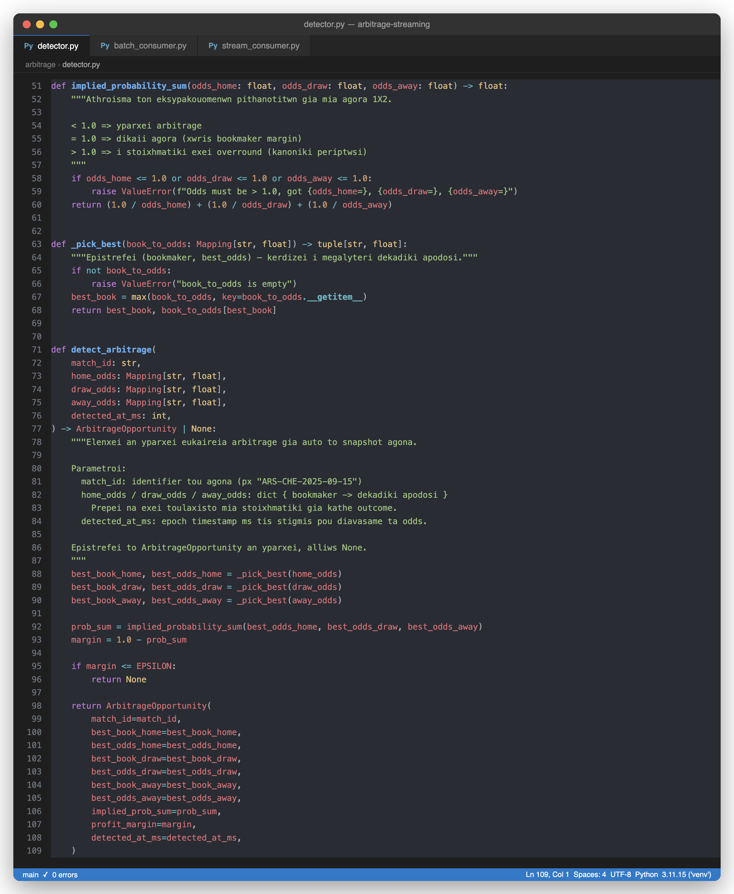
arbitrage/detector.py — η κοινή λογική ανίχνευσης: implied_probability_sum() (άθροισμα 1/odds), _pick_best() (καλύτερη απόδοση ανά outcome) και detect_arbitrage() που επιστρέφει ArbitrageOpportunity μόνο όταν το margin υπερβαίνει το ε (προστασία από floating-point noise).Παρότι οι δύο consumers μοιράζονται την ίδια λογική ανίχνευσης, ο τρόπος με τον οποίο καταναλώνουν τα δεδομένα από το Kafka είναι θεμελιωδώς διαφορετικός. Η πρώτη διαφορά εντοπίζεται στο σημείο ανάγνωσης: ο Batch χρησιμοποιεί spark.read (πεπερασμένη ανάγνωση με ρητά όρια offsets), ενώ ο Stream χρησιμοποιεί spark.readStream (συνεχές query χωρίς «τέλος»).
# Polling loop: ο ΔΙΚΟΣ μας κώδικας αποφασίζει
# πότε και τι θα διαβαστεί.
while not stop:
# 1. Ρωτάμε το Kafka πού βρίσκεται το tail
end_offsets = fetch_end_offsets(servers, topic)
# 2. Πεπερασμένο read: από τον cursor
# μέχρι τα τρέχοντα end offsets
raw = (spark.read.format("kafka")
.option("subscribe", topic)
.option("startingOffsets",
starting_offsets_json)
.option("endingOffsets",
ending_offsets_json)
.load())
# ... detection σε ΟΛΟ το παράθυρο ...
# 3. Χειροκίνητη προώθηση cursor
cursor = dict(end_offsets)
# 4. Αδράνεια μέχρι το επόμενο παράθυρο
time.sleep(window_seconds - elapsed)# Συνεχές streaming query: το SPARK αποφασίζει
# πότε τρέχει το επόμενο micro-batch.
raw = (spark.readStream.format("kafka")
.option("subscribe", topic)
.option("startingOffsets", "earliest")
.load())
# Δηλωτικός ορισμός: callback ανά micro-batch
query = (events.writeStream
.foreachBatch(state.process_batch)
# Τα offsets τα διαχειρίζεται ΤΟ SPARK
# αυτόματα μέσω checkpoint directory
.option("checkpointLocation",
str(checkpoint_dir))
# Νέο micro-batch κάθε 200 ms
.trigger(processingTime="200 milliseconds")
.start())
# Ο driver απλώς περιμένει — δεν υπάρχει
# polling loop ούτε sleep()
query.awaitTermination()Η δεύτερη διαφορά αφορά τη διατήρηση του «τελευταίου» odds ανά (αγώνα, στοιχηματική). Ο Batch, επειδή βλέπει κάθε φορά ένα αυτοτελές σύνολο δεδομένων, το λύνει δηλωτικά με SQL window function. Ο Stream, επειδή βλέπει μόνο τα νέα events κάθε micro-batch, χρειάζεται state που επιβιώνει μεταξύ διαδοχικών micro-batches:
# Κάθε batch είναι αυτοτελές: η deduplication
# γίνεται δηλωτικά μέσα στο DataFrame.
w = F.expr(
"row_number() over ("
" partition by match_id, bookmaker"
" order by event_time_ms desc)")
snapshot = (df.withColumn("_rn", w)
.filter("_rn = 1")
.drop("_rn"))
# Detection σε ΟΛΑ τα matches του batch
opps = detect_for_partition(
snapshot.collect())# Το state ζει ΕΞΩ από το micro-batch και
# ενημερώνεται incremental σε κάθε callback.
cur = self.latest.setdefault(mid, {}).get(book)
if cur is None or ev[0] >= cur[0]:
self.latest[mid][book] = ev
touched_matches.add(mid)
# Detection ΜΟΝΟ στα matches που άλλαξαν
# σε αυτό το micro-batch (incremental work)
for mid in touched_matches:
opp = detect_arbitrage(
match_id=mid,
home_odds=..., draw_odds=...,
away_odds=...,
detected_at_ms=now_ms)Συνοπτικά, οι δομικές διαφορές των δύο υλοποιήσεων:
| Διάσταση | Batch Consumer | Stream Consumer |
|---|---|---|
| Kafka API | spark.read — πεπερασμένο read | spark.readStream — συνεχές query |
| Χρονισμός | Δικός μας polling loop με time.sleep() | Trigger του Spark (processingTime=200ms) |
| Διαχείριση offsets | Χειροκίνητος cursor ανά partition | Αυτόματη, μέσω checkpoint directory |
| Deduplication | SQL window function (stateless) | In-memory state dict (stateful) |
| Εύρος detection | Όλα τα matches του παραθύρου | Μόνο τα touched matches του micro-batch |
| Λογική ανίχνευσης | Κοινή — arbitrage/detector.py :: detect_arbitrage() | |
Όλα τα πειράματα εκτελέστηκαν σε MacBook με Apple Silicon. Το Kafka τρέχει σε container Docker με 1 broker και 3 partitions· το Spark σε λειτουργία local[*] που αξιοποιεί όλους τους πυρήνες του μηχανήματος. Δεν χρησιμοποιείται cluster πολλαπλών κόμβων· η σύγκριση παραδειγμάτων είναι ανεξάρτητη από αυτό, καθώς οι μετρήσεις αφορούν την αρχιτεκτονική επιλογή και όχι την κλιμακωσιμότητα.
Για διασφάλιση της επαναληψιμότητας, αναπτύχθηκε orchestrator (benchmarks/run_experiment.py) που αυτοματοποιεί τα παρακάτω βήματα ανά πείραμα:
config.json που περιλαμβάνει όλα τα CLI args.| Μετρική | Ορισμός |
|---|---|
| Per-batch processing time | Wall-clock χρόνος που πήρε ένα batch ή micro-batch να επεξεργαστεί |
| Rows read per batch | Πλήθος events που καταναλώθηκαν σε ένα batch |
| End-to-end latency | (Wall-clock στιγμή ανίχνευσης) − (μέγιστο real_time_ms των events που συνθέτουν την ευκαιρία) |
| Throughput | Συνολικά events / διάρκεια εκτέλεσης (events ανά δευτερόλεπτο) |
| Catch coverage | Σύνολο μοναδικών match_ids που εντόπισε κάθε μέθοδος |
Εκτελέστηκαν δύο σενάρια με ταυτόσημο dataset (10.000 events) και ίδιες παραμέτρους producer και Stream consumer. Μεταβάλλεται μόνο το παράθυρο του Batch consumer, ώστε να απομονωθεί η επίδραση αυτής της παραμέτρου:
| Tag | Batch window | Stream trigger | Producer speed | Σκοπός |
|---|---|---|---|---|
fast | 10 s | 200 ms | max (0) | Baseline σύγκρισης |
slow_batch | 30 s | 200 ms | max (0) | Παρατήρηση επίδρασης μεγαλύτερου batch window |
| Tag | Method | Events | Opps | Lat p50 | Lat p95 | Throughput |
|---|---|---|---|---|---|---|
| fast | Batch | 10.000 | 9 | 9,75 s | 9,86 s | 334 ev/s |
| fast | Stream | 10.000 | 9 | 1,43 s | 1,53 s | 2.391 ev/s |
| slow_batch | Batch | 10.000 | 9 | 29,87 s | 29,96 s | 300 ev/s |
| slow_batch | Stream | 10.000 | 9 | 1,57 s | 1,62 s | 2.396 ev/s |
Και οι δύο μέθοδοι, σε αμφότερα τα πειράματα, εντοπίζουν τις ίδιες ακριβώς 9 arbitrage ευκαιρίες. Η ταυτόσημη πληρότητα ανίχνευσης αποτελεί προαπαιτούμενο για να έχει νόημα η σύγκριση των υπόλοιπων μετρικών: αποδεικνύει ότι όποια διαφορά εμφανίζεται στις λοιπές διαστάσεις οφείλεται αποκλειστικά στις χρονικές ιδιότητες των δύο παραδειγμάτων και όχι σε διαφορές στην ποιότητα ανίχνευσης.
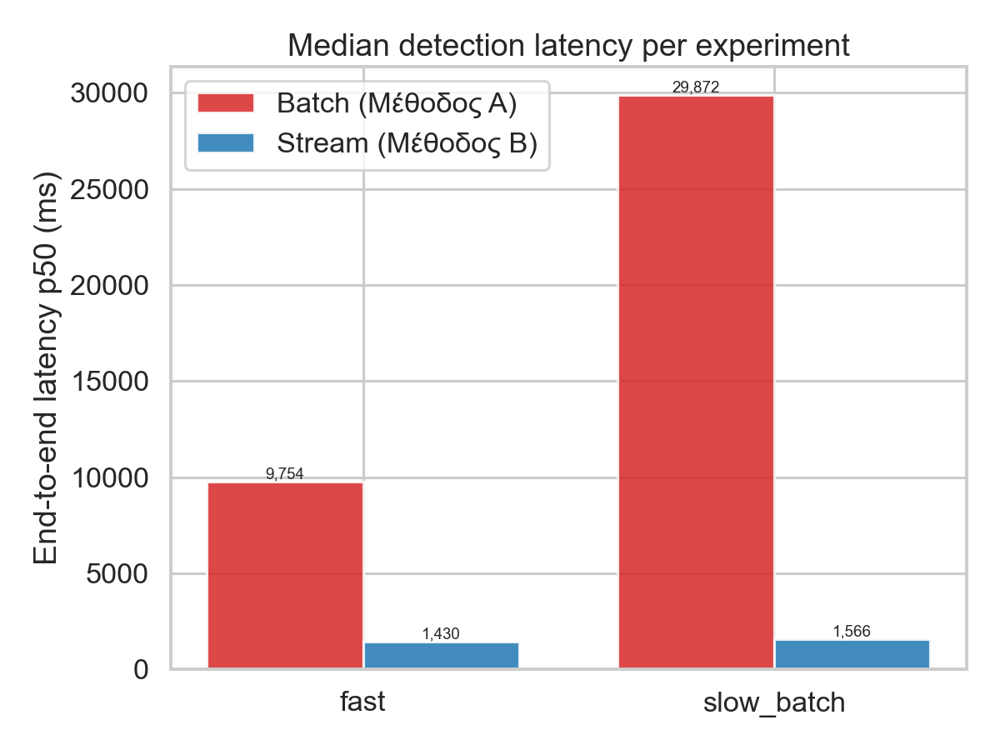
Όταν το batch window τριπλασιάζεται από 10 s σε 30 s, η median Batch latency τριπλασιάζεται αντίστοιχα (9,75 s → 29,87 s). Η median Stream latency παραμένει πρακτικά σταθερή (1,43 s → 1,57 s). Το εύρημα επιβεβαιώνει τη θεωρητική σχέση batch latency ≈ window, η οποία προκύπτει από το γεγονός ότι ένα event το οποίο φτάνει στο Kafka αμέσως μετά την έναρξη ενός batch αναμένει σχεδόν ολόκληρο το παράθυρο μέχρι την επόμενη εκτέλεση.
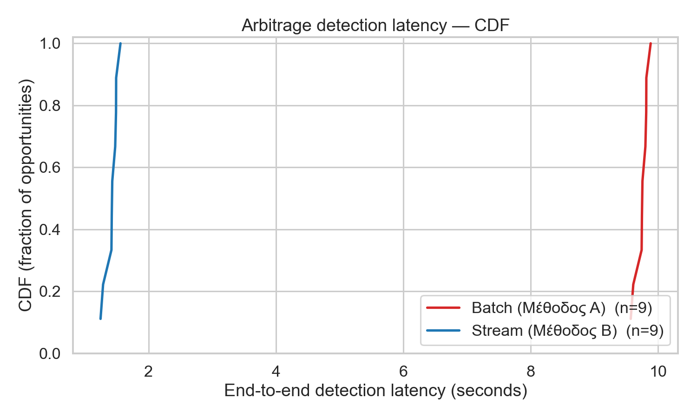
fast. Η συμπιεσμένη κατανομή του Stream γύρω στα 1,4–1,6 s υποδηλώνει προβλέψιμη απόκριση.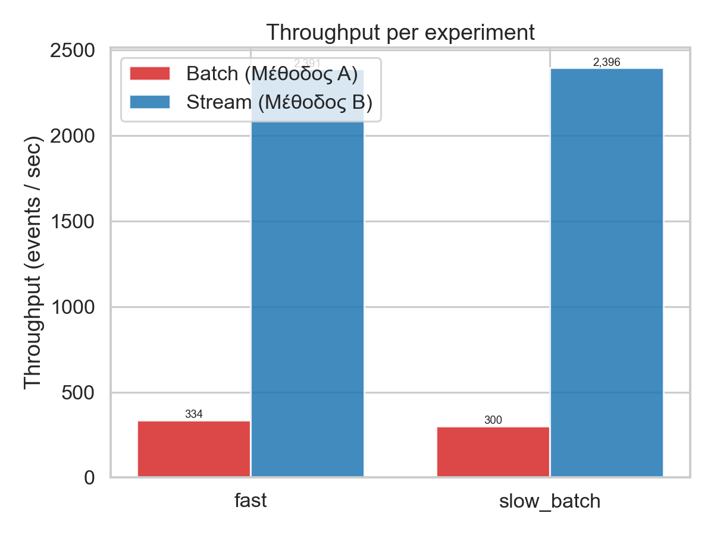
Το αποτέλεσμα αυτό αντιβαίνει στη συνήθη παραδοχή ότι το batch processing παρέχει μεγαλύτερη διεκπεραιωτική ικανότητα. Η εξήγηση εντοπίζεται στο γεγονός ότι ο Batch consumer δαπανά σημαντικό μέρος του χρόνου του σε idle waits μεταξύ διαδοχικών batches (sleep μέχρι τη συμπλήρωση του παραθύρου), ενώ ο Stream consumer επεξεργάζεται συνεχώς. Σε εργασίες με σταθερό φόρτο και μεγαλύτερα παράθυρα, η σύγκριση ενδέχεται να αντιστραφεί.
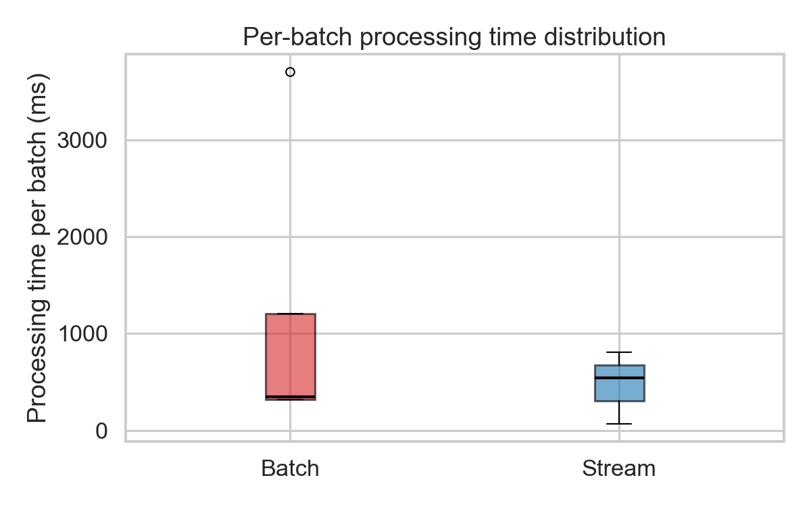
Η median per-batch processing time είναι παραπλήσια στις δύο μεθόδους (345 ms Batch, 541 ms Stream), αλλά ο Batch consumer εμφανίζει σημαντικά μεγαλύτερη διασπορά: το p95 ξεπερνά τα 3,2 s, ενώ του Stream παραμένει κάτω από 800 ms. Αυτό οφείλεται στο ότι το πρώτο batch κάθε εκτέλεσης πρέπει να καταναλώσει το πλήρες backlog ταυτόχρονα, ενώ τα stream micro-batches έχουν σταθερά μικρά μεγέθη.
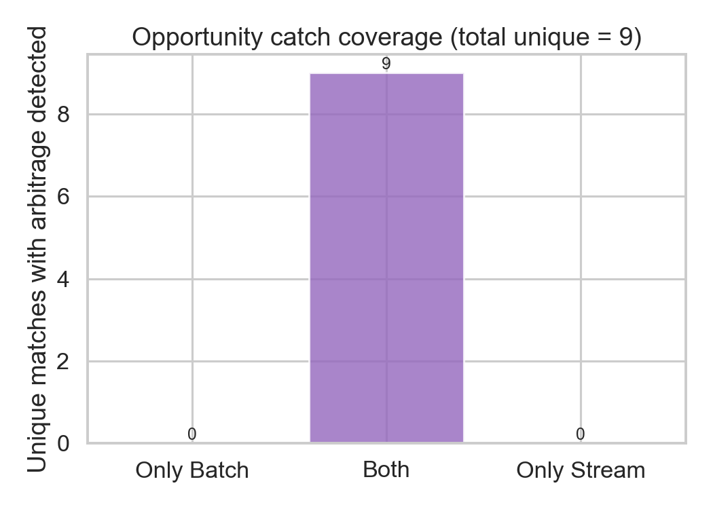
Η ενότητα αυτή τεκμηριώνει βήμα-βήμα μια πλήρη εκτέλεση του pipeline, όπως παρουσιάστηκε και στη ζωντανή επίδειξη της εργασίας. Χρησιμοποιούνται τέσσερα terminals: ένα για τη διαχείριση της υποδομής, ένα για κάθε consumer, και ένα για τον producer. Για την ευκολία της ζωντανής επίδειξης τα βήματα τυλίγονται στο βοηθητικό script demo.sh — έναν λεπτό wrapper που απλώς εκτελεί τις παρακάτω εντολές (αυτές εμφανίζονται και στα screenshots):
| Βήμα | Wrapper | Πραγματική εντολή που εκτελείται |
|---|---|---|
| Καθαρό topic | demo.sh clean | kafka-topics.sh --delete / --create --partitions 3 (μέσα στο container) |
| Stream consumer | demo.sh stream | python -m consumers.stream.stream_consumer --trigger-ms 200 |
| Batch consumer | demo.sh batch 8 | python -m consumers.batch.batch_consumer --window-seconds 8 |
| Αποστολή events | demo.sh send 5000 | python -m producer.producer --speed 0 --limit 5000 |
| Σύνοψη | demo.sh results | Pretty-print των benchmarks/results/*_opps.jsonl |
Το Kafka (KRaft mode) και το Kafka UI εκκινούν ως Docker containers με docker compose up -d. Στη συνέχεια το topic betting-odds διαγράφεται και αναδημιουργείται με το εργαλείο kafka-topics.sh (εκτελείται μέσα στο container μέσω docker exec) με 3 partitions, ώστε κάθε εκτέλεση να ξεκινά από μηδενική κατάσταση — χωρίς παλιά μηνύματα, offsets ή checkpoints.
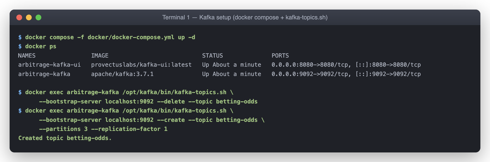
arbitrage-kafka στη θύρα 9092, arbitrage-kafka-ui στη θύρα 8080) και η αναδημιουργία του topic με kafka-topics.sh --delete / --create --partitions 3 --replication-factor 1.Σε δύο ξεχωριστά terminals εκκινούν ο Stream consumer (trigger 200 ms) και ο Batch consumer (window 8 s). Και οι δύο συνδέονται στο ίδιο topic και περιμένουν δεδομένα — ο Stream μέσω συνεχούς streaming query, ο Batch μέσω polling loop που «ξυπνά» κάθε 8 δευτερόλεπτα (τα κενά batches 1–4 στο Σχήμα 17 είναι ακριβώς αυτά τα άδεια παράθυρα πριν την άφιξη δεδομένων).
Ο producer διαβάζει και τα 14.802 matches, τα ταξινομεί χρονολογικά και στέλνει τα πρώτα 5.000 events στο Kafka με μέγιστη ταχύτητα (--speed 0). Η αποστολή ολοκληρώνεται σε 0,3 δευτερόλεπτα με μέσο ρυθμό ~15.000 msg/s — απόδειξη ότι ο producer δεν αποτελεί bottleneck της σύγκρισης.
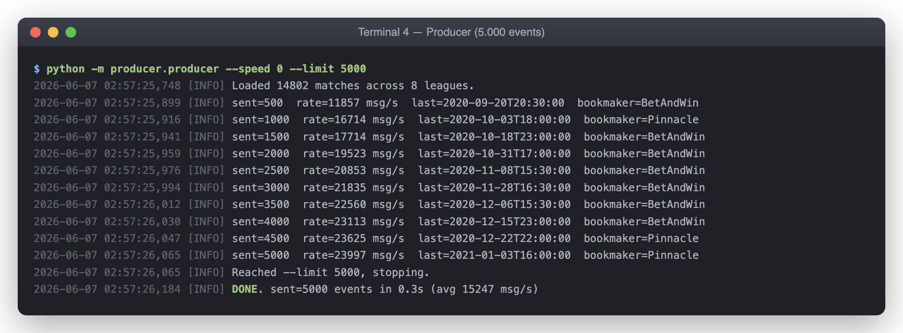
Η άφιξη των μηνυμάτων επιβεβαιώνεται στο Kafka UI: 5.000 μηνύματα κατανεμημένα στα 3 partitions (1.719 / 1.548 / 1.733). Η σχεδόν ομοιόμορφη κατανομή προκύπτει από το hashing του partition key (match_id).
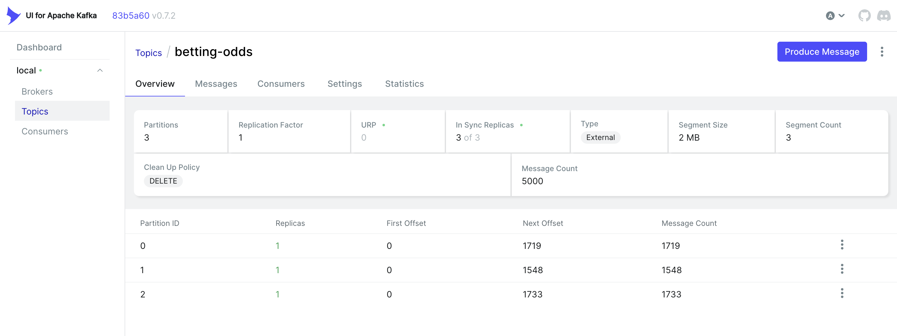
betting-odds: Message Count 5.000, 3 partitions με ισορροπημένη κατανομή μέσω του partition key.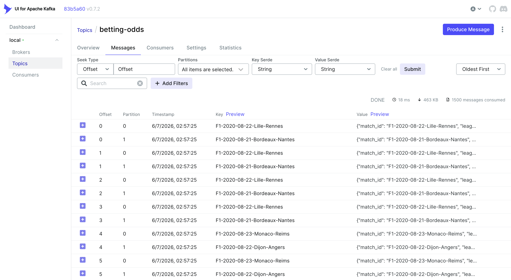
match_id και value το OddsUpdate JSON. Διακρίνονται διαδοχικά events του ίδιου αγώνα (π.χ. F1-2020-08-22-Lille-Rennes) από διαφορετικές στοιχηματικές — ακριβώς η ασυμμετρία που αναζητούν οι consumers.Ο Stream consumer παραλαμβάνει και τα 5.000 events στο αμέσως επόμενο micro-batch: στο batch=2 επεξεργάζεται 5.000 rows που αφορούν 1.253 αγώνες (touched matches) και εντοπίζει και τις 7 ευκαιρίες σε 1.110 ms — περίπου 1,3 δευτερόλεπτα μετά την αποστολή.
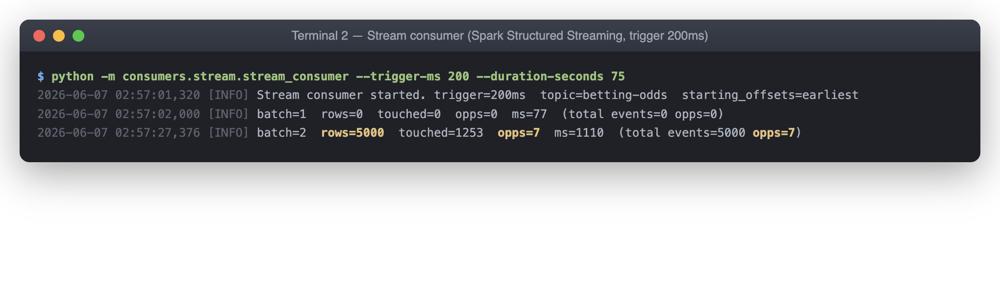
opps=7 σε ~1,1 s επεξεργασίας.Ο Batch consumer, αντίθετα, «κοιμάται» μέχρι τη λήξη του τρέχοντος παραθύρου: τα batches 1–4 είναι κενά, και τα δεδομένα επεξεργάζονται μαζικά στο batch=5 — περίπου 10 δευτερόλεπτα μετά την αποστολή (αναμονή παραθύρου + 3,5 s επεξεργασίας του πλήρους backlog). Η διαφορά αυτή είναι οπτικοποιημένη στιγμή προς στιγμή η θεωρητική σχέση batch latency ≈ window της ενότητας 7.
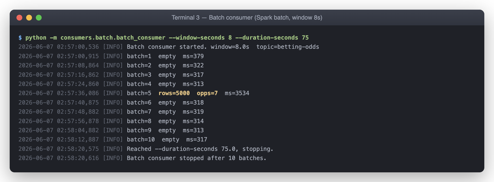
batch=5 (rows=5000, opps=7, ms=3534). Εμφανές και το spike του processing time όταν καταναλώνεται ολόκληρο το backlog μονομιάς (πρβ. Σχήμα 10).Κάθε consumer γράφει τις ευκαιρίες που εντοπίζει στο δικό του αρχείο εξόδου (stream_opps.jsonl / batch_opps.jsonl)· το demo.sh results απλώς τα διαβάζει και τα μορφοποιεί σε συγκριτική λίστα. Αμφότερες οι μέθοδοι εντοπίζουν τα ίδια 7 arbitrage — μεταξύ αυτών και το μεγαλύτερο περιθώριο του dataset (Paris SG–Metz, 9,34%) — επιβεβαιώνοντας ζωντανά την ταυτόσημη πληρότητα ανίχνευσης της παραγράφου 7.2: η διαφορά των δύο παραδειγμάτων είναι αμιγώς θέμα χρονισμού, όχι ορθότητας.
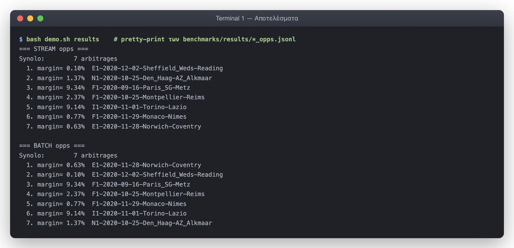
benchmarks/results/*_opps.jsonl (μέσω demo.sh results): Stream και Batch αναφέρουν τις ίδιες ακριβώς 7 ευκαιρίες (με διαφορετική σειρά καταγραφής, καθώς ο Stream γράφει με τη σειρά εντοπισμού ανά micro-batch).Για ένα παραγωγικό σύστημα ανίχνευσης arbitrage σε στοιχηματικές αποδόσεις, η Stream αρχιτεκτονική είναι σαφώς προτιμότερη. Οι ευκαιρίες arbitrage έχουν διάρκεια ζωής της τάξης των δευτερολέπτων, καθιστώντας απαγορευτική την καθυστέρηση ενός batch consumer με window 30 s ή μεγαλύτερο. Η Batch αρχιτεκτονική παραμένει χρήσιμη μόνο για ιστορική ανάλυση και reporting όπου δεν απαιτείται απόκριση πραγματικού χρόνου.
mapGroupsWithState και RocksDB state store για υποστήριξη checkpointing και fault tolerance.